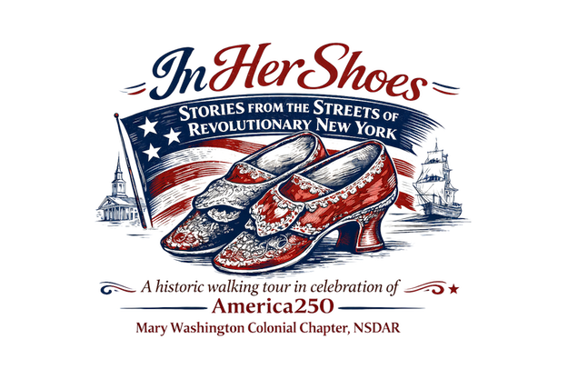

Welcome to
“In Her Shoes: Stories from the Streets of Revolutionary New York!”
A historic walking tour in celebration of America250,
presented by the Mary Washington Colonial Chapter, NSDAR
Please click below to begin:
Welcome
Stories from the Streets of Revolutionary New York
Step into the Revolutionary era on this self-guided walking tour of seven sites in Lower Manhattan. In Her Shoes centers the stories of the women who lived, worked, and shaped this neighborhood — in celebration of America250, presented by the Mary Washington Colonial Chapter, NSDAR.
You have visited 0 of 7 stops.
Learn more about the Mary Washington Colonial Chapter, NSDAR at
mwccdar.org.
For questions or feedback about this tour, email us at
info@mwccdar.org.
Placeholder — acknowledgments text to be added here.